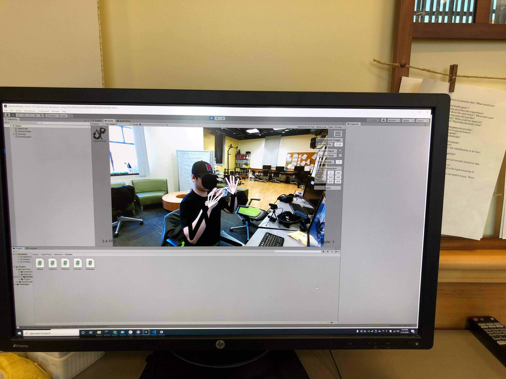
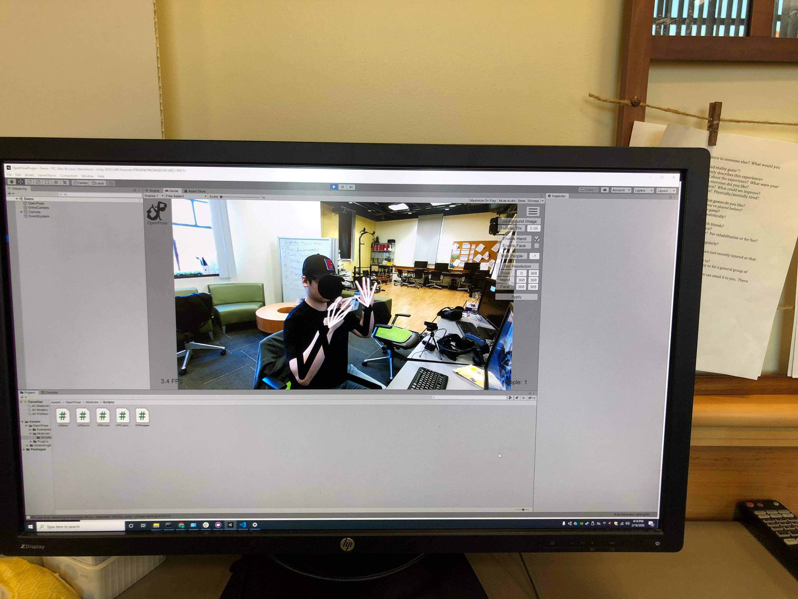

Headline
-
[Subsystem 1] The function to track motion and gestures of body (can be extended to head and fingers) is realized by OpenPose. See our demo pictures.
 
 -
[Subsystem 2] The prefab which enables controller's laser module adjustable to different directions. Direction can be changed by interacting(grab) with right hand controller or pointing and grabbing a specific object in the scene, in the case, the laser will lock on the object which user moves their controller.

Hanyuan Xiao

- Researched ready-for-use algorithms for full-body tracking in VR.
- Full-body tracking system setup and initial testing
- A flowchart for this subsystem so far. In the flowchart, Deep Learning Network is being tested using OpenPose. Detailed feedback such as realism and accuracy of alignment will be received and reported upon test in Unity.

Hyuck Ju (Tommy) Kim

- Researched ready-for-use algorithms for full-body tracking in VR as well as infusing such algorithms with Unity
- Full-body tracking system setup and initial testing (OpenPose)
- Researched that in order to use openpose to move an avatar in Unity, the 2d coordinates provided by openpose should be converted to 3d coordinates. In order to do this, intrinsic and extrinsic camera calibration data is required.
Robert(Feiyu) Miao

- Learning and refreshing the knowledge of unity and C#.
- Learning and deploy the VR environment(VIVE).
- Research the different approach to implement the functionality.
- By having a child node implementing laser component. (Failed: not able to listen to user interaction events)
- By having a parent node wrapping a controller node. (Failed: not able to maintain moving direction of controller)
- By inheriting the laser class from package. (Failed: not able to access necessary private variables and methods)
- By implementing a new laser class. (Failed: ditto)
- By changing the transform of laser class. (Succeed)
- Implementing the prefab which enable the functionality of adjustable laser.
Hanyuan Xiao, Hyuck Ju (Tommy) Kim
- Multi-camera alignment and extrinsic matrices extraction. So far, we have got a checkerboard for camera calibration. Researched available softwares or open-source algorithms are available.
- Agisoft (commercial software, complete pipeline, NOT free)
- Camera Calibration Toolbox for Matlab (accuracy is not as high as others, free)
- Pytorch 3D (new, machine learning method, free)

- Construction of 3D skeleton (joints) by OpenPose and quality testing.
- Importation of 3D skeleton to Unity project.
Robert(Feiyu) Miao
- Migrating the prefab to the official one, which will enable other developer to use it in their applications.
- Explorering new features which may help users interact with system more conveniently.
- Laser length changing by interaction of 2 controller(grabbing).
- Laser position offsets, which may make pointing at corners much easier.
- More to be considered and discussed.